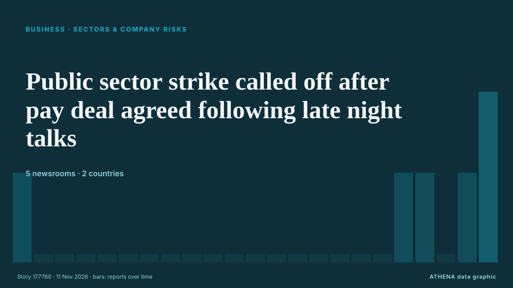

Secteurs et risques
SponsoriséPrésenté par  Cybernetics and Artificial Intelligence Lab Welcome to the Cybernetics and Artificial Intelligence Laboratory, established at the Department of Business Administration of the National and Kapodistrian University of Athens. The lab is headed by Professor Dimitrios Thomakos. The lab aims to do research that can be published in top venues. Our research uses tools and methods of Artificial Intelligence, and lies in the following areas: - Forecasting - Decision making - Cyber security - Finance We are always looking forward to collaborating with exceptional students!
Cybernetics and Artificial Intelligence Lab Welcome to the Cybernetics and Artificial Intelligence Laboratory, established at the Department of Business Administration of the National and Kapodistrian University of Athens. The lab is headed by Professor Dimitrios Thomakos. The lab aims to do research that can be published in top venues. Our research uses tools and methods of Artificial Intelligence, and lies in the following areas: - Forecasting - Decision making - Cyber security - Finance We are always looking forward to collaborating with exceptional students!
| 29 oct. | 0 |
|---|---|
| 30 oct. | 0 |
| 31 oct. | 0 |
| 1 nov. | 0 |
| 2 nov. | 0 |
| 3 nov. | 0 |
| 4 nov. | 0 |
| 5 nov. | 1 |
| 6 nov. | 0 |
| 7 nov. | 1 |
| 8 nov. | 4 |
| 9 nov. | 5 |
| 10 nov. | 5 |
| 11 nov. | 0 |
Les titres sont affichés en anglais, tels que publiés.

Public sector strike called off after pay deal agreed following late night talks
Talks on the new deal went on well into Wednesday morning as the two sides sought to address a variety of outstanding issues. de The Irish Times
Malta’s Creative Community Hits Back At Culture Minister Over Controversial Comments
Culture Minister Malcolm Paul Agius Galea is facing mounting criticism following his controversial comments about artists and creativity, with several prominent figures from Malta’s creative… de Lovin Malta
Iranian, Ivorian ministers discuss ways to boost ties in ICT sector
Information and Communication Technology Minister Sattar Hashemi and Ivorian Minister of Digital Transition and Technological Innovation Djibril Ouattara have explored the potential to expand… de Tehran Times
Retailers suffer subdued October as shoppers hold back ahead of Black Friday
Total UK retail sales increased by 1.5% year on year, although this was above the three-month average growth of 1.2%, according to the BRC and KPMG. de Evening Standard (London)
Nigeria, UK deepen creative industry ties ahead of 2028
The UK and Nigeria have concluded a series of creative-sector engagements in Lagos, connecting creative businesses, practitioners, policymakers and cultural institutions with expertise, networks and… de Daily Trust
Dolly Parton's manager drops lawsuit against nephew
The lawsuit filed in September accused the late musician's nephew of attempting to extort money from her estate. de Free Malaysia Today
VAALCO Advances Côte d'Ivoire Offshore Exploration Ahead of 2028 Drilling
VAALCO Energy has secured government approval to advance exploration at its operated CI-705 block offshore Côte d'Ivoire, with plans to drill an exploration well by the end of 2028… de Offshore Engineer
Russell Brand's wife says 'oh God' to her disgraced husband as he winked
Brand held onto his crucifix before a lunch break was taken. de Liverpool Echo
Media industry still has a problem with sexual abuse, UK minister says
Britain’s culture minister, Lisa Nandy, said on Sunday there was still a problem with sexual abuse in the media industry after Russell Brand, once a high-profile comedian and actor, was convicted of… de Cyprus Mail
Al Arabiya: Iraqi delegation delivers US message to Iran
According to the sources, the delegation met with Iranian officials in Tehran. de TASS (English)